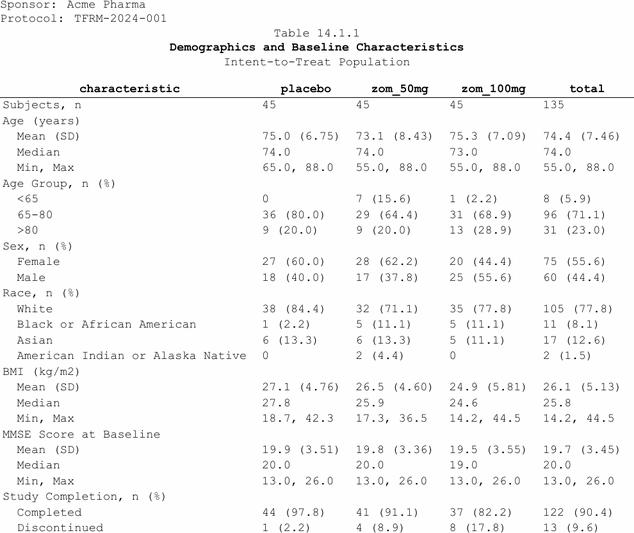

Titles
Each argument to fr_titles() is one title line, centered
by default:
spec <- tbl_demog |>
fr_table() |>
fr_titles(
"Table 14.1.1",
"Demographics and Baseline Characteristics",
"Intent-to-Treat Population"
)
length(fr_get_titles(spec))
#> [1] 3Calling fr_titles() again replaces all
previous titles.
SAS:
TITLE1 "Table 14.1.1"; TITLE2 "Demographics...";
Styled titles
Pass a named list to control alignment and bold per line:
spec <- tbl_demog |>
fr_table() |>
fr_titles(
list("Sponsor: Acme Pharma", align = "left"),
list("Protocol: TFRM-2024-001", align = "left"),
"Table 14.1.1",
list("Demographics and Baseline Characteristics", bold = TRUE),
"Intent-to-Treat Population"
)
length(fr_get_titles(spec))
#> [1] 5
Mixed alignment with selective bold titles
List fields: align ("left",
"center", "right"), bold
(logical), font_size (numeric).
Default styling
.align and .bold set defaults for all
lines:
spec <- tbl_demog |>
fr_table() |>
fr_titles(
"Table 14.1.1",
"Demographics and Baseline Characteristics",
.bold = TRUE, .align = "center"
)
fr_get_titles(spec)[[1]]$bold
#> [1] TRUEFootnotes
spec <- tbl_demog |>
fr_table() |>
fr_footnotes(
"Percentages based on number of subjects per treatment group.",
"MMSE = Mini-Mental State Examination.",
.separator = FALSE
)
length(fr_get_footnotes(spec))
#> [1] 2| Option | Default | Description |
|---|---|---|
.separator |
FALSE |
Draw a horizontal separator rule above footnotes |
.placement |
"every" |
"last" = last page only (PDF only; RTF repeats
all) |
.align |
"left" |
Footnote text alignment |
SAS:
FOOTNOTE1 "Percentages...";
Inline markup
Use {fr_*()} expressions inside any text string —
titles, footnotes, column labels, data cells:
spec <- tbl_demog |>
fr_table() |>
fr_footnotes(
"{fr_super('a')} Fisher's exact test.",
"{fr_super('b')} Cochran-Mantel-Haenszel test.",
"BMI = Body Mass Index (kg/m{fr_super(2)})."
)
fr_get_footnotes(spec)[[3]]$content
#> [1] "BMI = Body Mass Index (kg/m\001SUPER:2\002)."Markup reference
| Function | Output | Use case |
|---|---|---|
fr_super(x) |
Superscript | Footnote markers, units ("m{fr_super(2)}") |
fr_sub(x) |
Subscript | Chemical formulas ("H{fr_sub(2)}O") |
fr_bold(x) |
Bold | Inline emphasis ("{fr_bold('Total')} Subjects") |
fr_italic(x) |
Italic | P-value annotations ("{fr_italic('P')}-value") |
fr_underline(x) |
Underline | Highlighting ("{fr_underline('CONFIDENTIAL')}") |
fr_newline() |
Line break | Multi-line cells ("Treatment{fr_newline()}Arm") |
fr_dagger() |
Dagger (U+2020) | Treatment-related AE markers |
fr_ddagger() |
Double dagger (U+2021) | Serious AE markers |
fr_emdash() |
Em dash (U+2014) | Title clauses ("Safety {fr_emdash()} FAS") |
fr_endash() |
En dash (U+2013) | Numeric ranges ("18{fr_endash()}65 years") |
fr_unicode(code) |
Unicode char | Plus-minus (fr_unicode(0x00B1)), degree, etc. |
Markup in data cells
Markup works anywhere a string appears, including the data itself:
d <- data.frame(stat = "P{fr_super('a')}-value", val = "<0.001",
stringsAsFactors = FALSE)
spec <- d |>
fr_table() |>
fr_cols(
stat = fr_col("Statistic", width = 2),
val = fr_col("Result", width = 1.5)
)The sentinel tokens survive paste(),
sprintf(), and glue() — they are resolved
per-backend at render time.